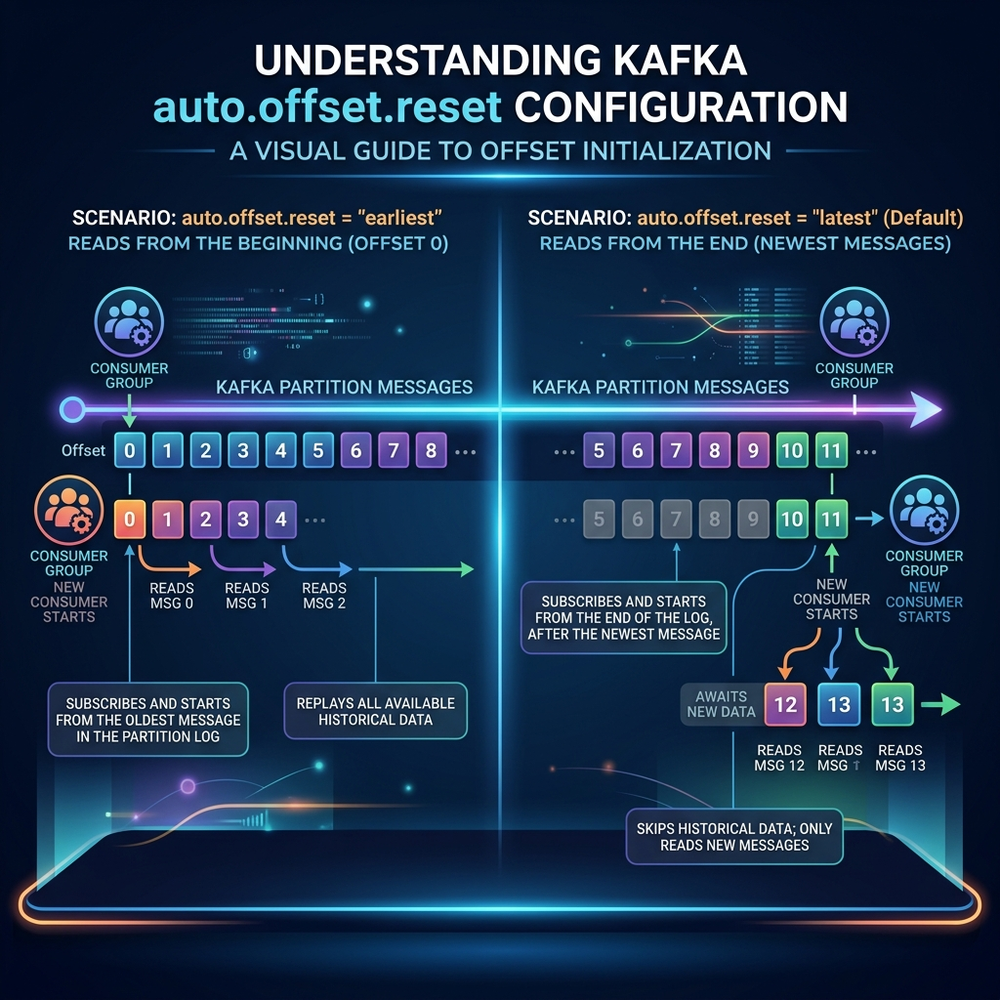

When starting a fresh Kafka consumer group, or when a consumer points to a topic where records have expired, the consumer group has no stored offset bookmark to look at. In this scenario, how does Kafka know where your consumer should start reading?
This is configured using the auto.offset.reset setting. Choosing the wrong setting can cause you to accidentally process years of stale historical data or, conversely, skip important messages. Let's compare the options simply.

Imagine walking into a presentation room 30 minutes after it started:
- auto.offset.reset = earliest: You ask the organizer for a recording of the first 30 minutes. You sit in the back room and watch the entire recording from page 1, getting up to speed on everything that happened before joining the live audience.
- auto.offset.reset = latest: You ignore everything that happened in the first 30 minutes. You sit down in a chair and start taking notes *only* on the words spoken from the exact second you sat down.
The Three Offset Reset Options
1. auto.offset.reset = "latest" (Default)
If no committed offset exists, the consumer starts reading from the end of the partition. It will only process messages written after the consumer subscribed to the topic.
- Use Case: Real-time dashboards, chat messaging apps where historical greetings are irrelevant.
- Risk: You miss any messages written before the consumer joined the group.
2. auto.offset.reset = "earliest"
If no committed offset exists, the consumer starts reading from the absolute beginning of the partition (offset 0, or the oldest message still held on the broker).
- Use Case: Data sync tasks, microservices rebuilding local database state, data analytics.
- Risk: Can cause high initial CPU/network load as the consumer processes massive amounts of historical backlog.
3. auto.offset.reset = "none"
If no committed offset is found, Kafka throws a NoOffsetForPartitionException exception directly to your client code.
- Use Case: Highly sensitive transaction engines where humans must manually inspect and set the starting offset.
Crucial Rule: Stored Offsets Always Win
It is important to remember that auto.offset.reset only applies when there are no committed offsets for the consumer group. If a consumer has already run, committed offset 1025, stopped, and restarted, it will resume at offset 1026, regardless of whether you set earliest or latest.
Configuring in Java
Here is how to set the configuration during consumer client initialization:
Properties props = new Properties();
props.put("bootstrap.servers", "localhost:9092");
props.put("group.id", "analytics-group");
// Set to earliest to process all historical messages
props.put("auto.offset.reset", "earliest");
props.put("key.deserializer", "org.apache.kafka.common.serialization.StringDeserializer");
props.put("value.deserializer", "org.apache.kafka.common.serialization.StringDeserializer");
KafkaConsumer consumer = new KafkaConsumer<>(props); Conclusion
Choose earliest when data accuracy and processing history are critical. Choose latest when you only care about real-time events happening right now. Understanding this starting behavior prevents missing records or accidental duplicate replays when booting up new consumer applications.